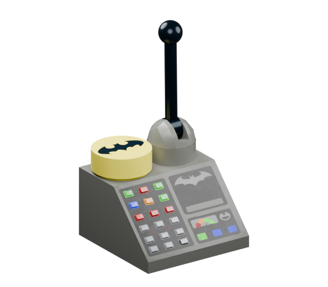

Ready when you are
Check for the latest Batcomputer update.
Download now. Install when you're ready.
Your projects, settings and installed mods stay in place.

Check for the latest Batcomputer update.
Download now. Install when you're ready.
Your projects, settings and installed mods stay in place.